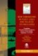
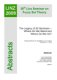

Electronic reprints/preprints are sent on request by e-mail free of charge ().
[Overview | Books | Theses | Editorial | Book Ch. | Int. J. | Conf. | Tech. Rep. | Abstracts | Preprints]
Special Issues
U. Bodenhofer, E. Hüllermeier, F. Klawonn, and R. Kruse, editors
Special issue "Soft computing for information mining."
Soft Computing, 11(5):397-494, 2007. (7 papers) [table of contents]
Editorial: pp. 397-399 [ bib |
DOI ]
U. Bodenhofer, B. De Baets, E. P. Klement, and S. Saminger-Platz, editors.
Special issue "Fuzzy Set Theory - Where Do We Stand and Where Do We Go?"
Fuzzy Sets and Systems, 192:1-200, 2012. (9 papers) [table of contents]
Editorial: pp. 1-2 [ bib |
DOI ]
Proceedings

M. Štěpnička, V. Novák, and U. Bodenhofer, editors.New Dimensions in Fuzzy Logic and Related Technologies. Proceedings of the 5th EUSFLAT Conference. Vol. I
University of Ostrava, 2007. ISBN 978-80-7368-386-3. [ bib | .pdf ]
M. Štěpnička, V. Novák, and U. Bodenhofer, editors.
New Dimensions in Fuzzy Logic and Related Technologies. Proceedings of the 5th EUSFLAT Conference. Vol. II
University of Ostrava, 2007. ISBN 978-80-7368-387-0 .
[ bib |
.pdf ]

U. Bodenhofer, B. De Baets, E. P. Klement, and S. Saminger-Platz, editors.The Legacy of 30 Seminars - Where Do We Stand and Where Do We Go? Abstracts of the 30th Linz Seminar on Fuzzy Set Theory.
Johannes Kepler University Linz 2009. [ bib | .pdf ]